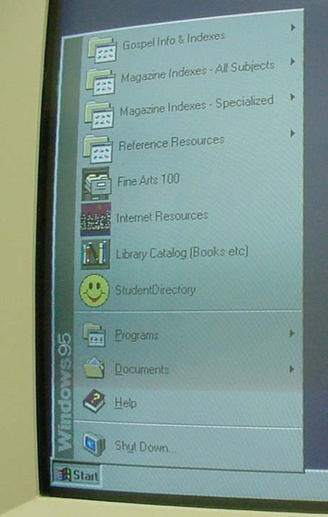

| The David O. McKay Library uses four arrangement systems: | |||
| Accession | Alphabetical | Library of Congress | Superintendent of Documents |
 |
 |
 |
 |
| Computer programs have menus, indexes, and search options to help us navigate to the information that we need. Internet has search engines and directories to help organize information for easier access. |
 |
||